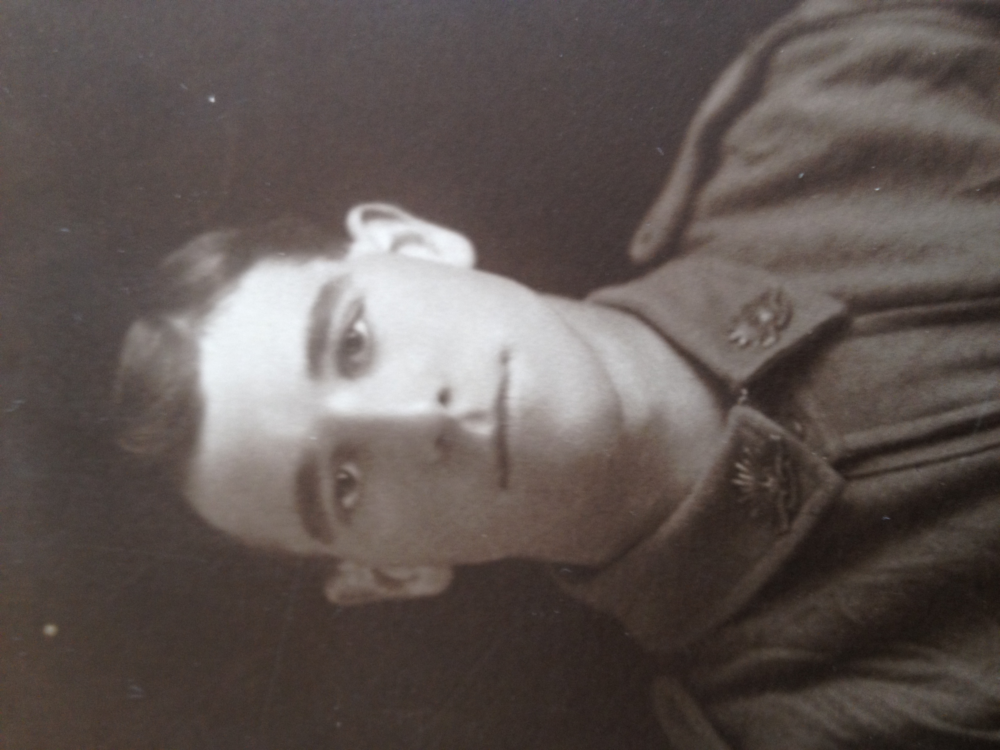
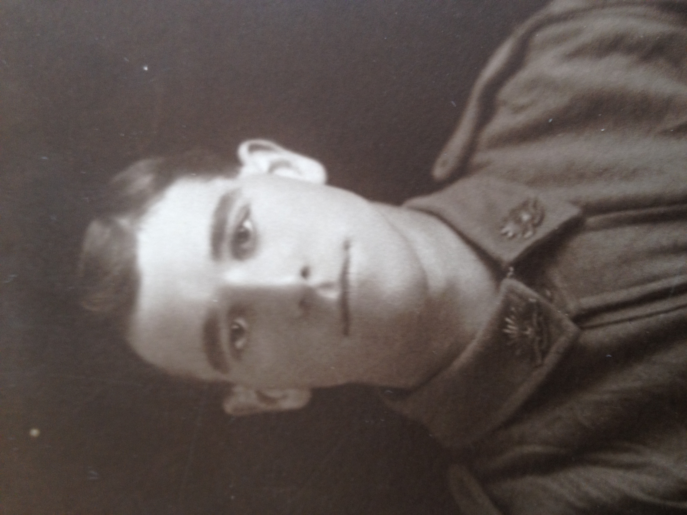
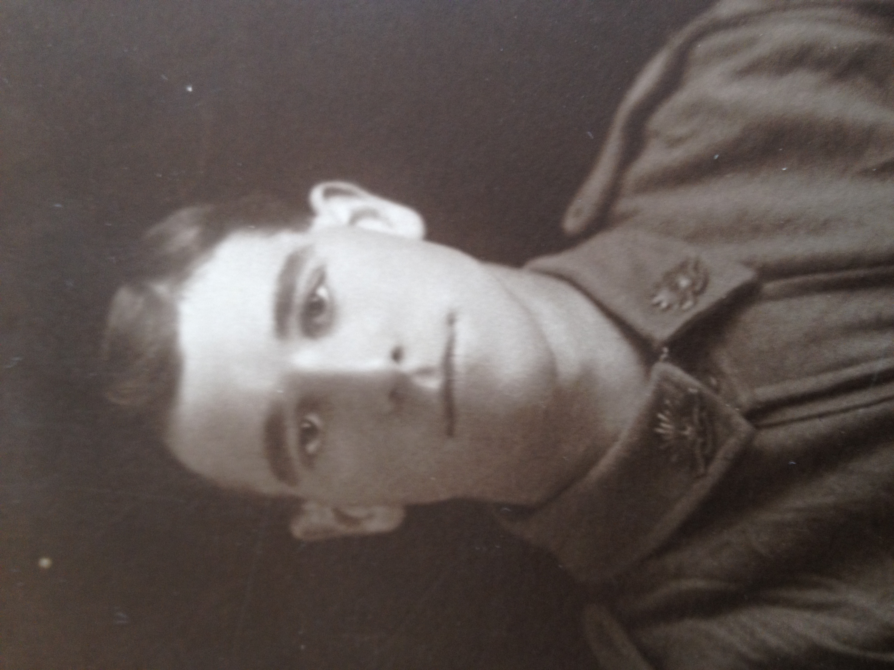
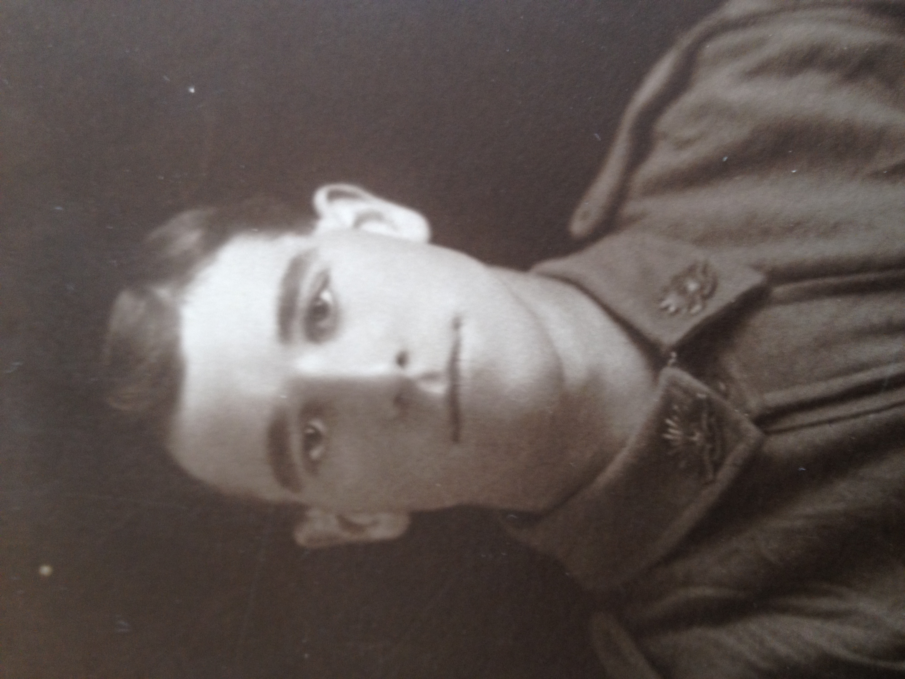

Jarvis family tree
The Jarvis family in Australia
Edward Jarvis b 1810 m Jane Roberts 1828
-
William Jarvis b 1829
-
John Jarvis b 1830
-
Mary Jarvis b 1833
- Joshua JARVIS 1832-1877 m Mary Ann Barret 1839-1913
- Edward Jarvis b 1858 d 1917 m Mary Malone
- Mary Ellen Jarvis b 1904 m Vinrie Wilton Howie 1922
- Joan Howie b 1923 m Nicholas Haskett 1944
- Monica Joan Haskett b 1945
- Mary Bernadette Haskett b 1947
- Anthony James Haskett b 1953
- Peter Damien Haskett b 1959
- Claire Margaret Haskett b 1966
- Ronald Howie b 1928 m Mary
- Mary Terese Howie
- Bernard John Howie
- Gerard Howie
- Denise Howie b 1933 m Paul Francis McNamara
- Angela McNamara
- Paul McNamara
- Catherine McNamara
- Bernard McNamara
Ellen Maria Jarvis b 1860 m John Mackerel Phillips 1853
Joshua John Jarvis b 1862 d 1885
Emma Jarvis b 1864 m Harold - Harry Duell
-
Gertrude Claire Duell b 1905
Amanda Jarvis b 1867 m Harry Smart
Arthur Jarvis 1868-1942 m Eliza Jane James 1867-1955
-
Keith Jarvis b 1891 d 1916
- Harold Arthur Jarvis b 1894 d 1956 m Isabel (known as Belle) Whiting 1918
-
Margaret (known as Peggy) Jarvis b 1918 m Adrian Ottoway
 

-
Eric Roy Jarvis 1896-1967 m Alice May Scott 1989-1995
- Keith Scott Jarvis b 1923 m Shirley Mary Sanderson 1949
- Lynn Jarvis b 1949 m CarolAnn Bunn
- Coralie Jarvis
- Ian Jarvis
- Shirley Jarvis b 1926 m Gordon Sorensen
- Kerryl Sorensen
- Meredith Sorensen
- Rosemary Sorensen
Reginald Lancelot Jarvis b 1899 d 1983 m Eunice Harris 1923
- Marjorie - Margaret Jarvis m Peter Minnis 1923
- Melva Ruth Minnis m ??? Walter
- Unknown
-
Margaret Jean Minnis b 1954 m Andrew Stephens
- Andrew Peter Minnis b 1954 m ???
- Nathan Minnis
- Melissa Minnis
- Michael Minnis
- Elizabeth Jane Minnis b 1957 m ??? Nichols
- Simon Nichols
- Peter Nichols
- Andrew Nichols
- Judith Naomi Minnis b 1963 m David Huddleston
- Scott Huddleston
- Ronald Harris Jarvis Dr, b 1925 m Jean Paterson 1951
- Hugh Alexander Jarvis b 1952 m Susan Florence White
- Mark Douglas Jarvis b 1978
- Kathryn Jane Jarvis b 1980
- David Andrew Jarvis b 1953
- Catherine Ann Jarvis b 1956
- Lesley Alexandra Dr Jarvis b 1957 m Paul John Whitbread 1981
- Emma Alexandra Whitbread b 1997
- Thomas Jordan Whitbread b 1999
-
Christopher John Jarvis b 1959
- Kay Jarvis b 1940 m Graham Potter
- Amanda Pearson b 1948 - father Ronald Pearson
- Susan Pearson b 1952 - father Ronald Pearson
Leslie Douglas Jarvis b 1904 d 1984 m Helen Kathleen Robson 1922
- Leslie David Jarvis b 1922 m Miriam Ann Slade 1945
- Mark Jarvis b 1949 m Jennifer Cotton 1983
- Ben Jarvis
- Melanie Catherine Jarvis b 1977 (mother Helen Pedler)
- Hayley Amanda Jarvis b 1984
- Tom Alexander Jarvis b 1988
- Anne Kathleen Jarvis b 1951 m Allan Lovell 1974
- David Alan Lovell b 1977
- Ben Adam Lovell b 1980
- James William LOvell b 1985
- Helen Catherine Jarvis b 1924 m Stewart David Brougham 1945
- Susan Brougham b 1948 m William Patrick Roche 1973
- David Patrick Roche b 1974
- Claire Elsie Roche b 1976
- Charles Howard Roche b 1978
- Julian Thomas Roche b 1979
- Melanie Brougham b 1949 m Ralf Baulch
- Tara Catherine Baulch b 1975
- Oliver Baulch b 1980
- Miles Baulch b 1982
- Lewis Baulch b 1985
- Alison Brougham b 1953 m John Harry Mayfield
- Anthony John Mayfield b 1977
- James Stewart Mayfield b 1980
- Lana Elsie Mayfield b 1985
- Andrew Stewart Brougham b 1955 m Caroline Leslie Wells
- Melanie Caroline Brougham b 1977
- Tanya Alice Brougham b 1977
- Hugh Andrew Brougham b 1979
- Jessica Helena Brougham b 1982
- Harriet Kate Brougham b 1983
- Charlotte Brogham b 1985
- Julia Magdalene Brougham b 1987
- George Brougham b 1990
- Peter James Jarvis b 1932 m Beryl Margaret Arthur 1952
- Jennifer Patricia Jarvis b 1952 m Arthur Henry Boulton
- Daniel John Jarvis Boulton b 1974
- Cameron Richard Boulton b 1977
- Tracey Judith Boulton b 1979
- Steven Jarvis b 1955 m Rosemary Mitchell
- Nuin Tara Jarvis b 1982
- Marjorie Alice Edith Jarvis b 1909 d 1995 m Gordon Milkins 1934
- Lillian Scott b 1918
Edith Mary Jarvis b 1870 m George Combe
- Lorna May Combe b 1908
- Reta Edith Combe b 1909
Un-named b 1873 d 1873
Walter Jarvis b 1877 d 1969 m Adelaide Matilda Polkinghorne
- Edith Maude Jarvis b 1894 d 1971 m Sidney Charles Millard 1928
- Kevin Millard
- Rita Millard
- Lindsay Millard
- Allan Millard
- Margaret Millard
- Basil Clarence Jarvis b 1896 d 1976 m Elizabeth McCallum 1927
- Cora Jarvis
- Audrey Jarvis
- Heather Jarvis
- Matthew Jarvis
- Florence May Jarvis b 1898
-
Frances Pearl Jarvis b 1900 m Johan Heinrich Williams 1923
- Ethel Gladys Jarvis b 1902
- Sydney George Jarvis b 1905 d 1993 m Olive Jean WHITTLSEA b 1913 d 1999
- Roger Leith Jarvis b 1943 d 1943
 
